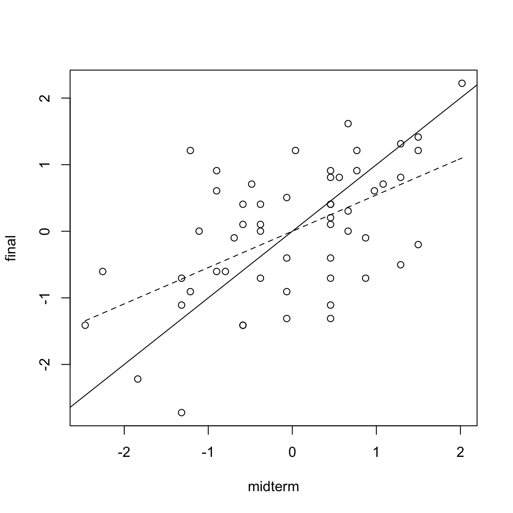

1.5 Equivalently
lm(log(usage) ~ temp)| Estimate | Std. Error | t value | Pr(>|t|) | |
|---|---|---|---|---|
| (Intercept) | 5.335 | 0.1203 | 44.34 | 1.406e-43 |
| temp | -0.03187 | 0.002149 | -14.83 | 1.661e-20 |
1.5.1 Example: Midterm vs Final exam score
| midterm | final | hw | total |
|---|---|---|---|
| 24.5 | 26.0 | 28.5 | 79.0 |
| 22.5 | 24.5 | 28.2 | 75.2 |
| 23.5 | 26.5 | 28.3 | 78.3 |
| 23.5 | 34.5 | 29.2 | 87.2 |
| 22.5 | 30.5 | 27.3 | 80.3 |
| 16.0 | 31.0 | 27.5 | 74.5 |
Exam score for Statistics 500 in one year at the University of Michigan. We observe a ``regression to the mean’’ phenomenon.
stat500 <- data.frame(scale(stat500))
midterm <- stat500$midterm
final <- stat500$final
txx <- sum((midterm - mean(midterm))^2)
beta1.hat <- sum((midterm - mean(midterm))*final)/txx
beta0.hat <- mean(final) - beta1.hat*mean(midterm)
c(beta0.hat, beta1.hat)## [1] -4.104752e-16 5.452277e-01 plot(midterm,final); abline(0,1)
curve(beta0.hat + beta1.hat*x, seq(min(midterm),max(midterm), by = 0.1), lty = 2, add = TRUE)Figure 1.2: Regression to the mean; the dashed-line is the regression line, indicating that students with extremely low scores on the midterm exam improved while those with extremely high scores regressed.
1.5.2 Normal error regression model
The normal regression is of the form \[\begin{equation} \tag{1.7} Y_i = \beta_0 + \beta_1 X_i + \epsilon_i; \quad \epsilon_i \overset{\mathrm{i.i.d}}{\sim} \mathcal{N}(0, \sigma^2) \end{equation}\]That is, the \(\epsilon_i\) are independent, identically distributed Gaussian random variables with mean \(0\) and variance \(\sigma^2\). The normal error regression model is a special case of the simple linear regression model discussed earlier. The assumption of normally distributed \(\epsilon_i\) allows one to perform more detailed inference, e.g., confidence interval estimation for the parameters \(\beta_0\) and \(\beta_1\).
Given \((X_1,Y_1), (X_2, Y_2), \dots, (X_n, Y_n)\), the likelihood of observing the \(\{Y_1,Y_2, \dots, Y_n\}\) under the normal error regression model with parameter \(\beta_0, \beta_1\) and \(\sigma^2\) is \[\begin{equation*} L(\beta_0, \beta_1, \sigma^2) := \prod_{i=1}^{n} \frac{1}{\sqrt{ 2 \pi \sigma^2}} \exp \Bigl( - \frac{(Y_i - \beta_0 - \beta_1X_i)^2}{2\sigma^2} \Bigr) \end{equation*}\] The maximum likelihood estimator for \(\beta_0\), \(\beta_1\) and \(\sigma^2\) are then estimates that maximizes the likelihood \(L(\beta_0, \beta_1, \sigma^2)\). That is \[\begin{equation*} \hat{\beta}_0, \hat{\beta}_1, \hat{\sigma}^2 := \underset{\beta_0, \beta_1, \sigma^2}{\operatorname{argmax}} \prod_{i=1}^{n} \frac{1}{\sqrt{ 2 \pi \sigma^2}} \exp \Bigl( - \frac{(Y_i - \beta_0 - \beta_1X_i)^2}{2\sigma^2} \Bigr). \end{equation*}\] This can be done as follows. Taking the logarithm of the likelihood gives \[\begin{equation*} \begin{split} \log{L} &= \log \prod_{i=1}^{n} \frac{1}{\sqrt{ 2 \pi \sigma^2}} \exp \bigl( - \frac{(Y_i - \beta_0 - \beta_1X_i)^2}{2\sigma^2} \bigr) \\ &= - \frac{n}{2} \log{ 2 \pi \sigma^2} - \sum_{i=1}^{n} \frac{(Y_i - \beta_0 - \beta_1X_i)^2}{2\sigma^2}. \end{split} \end{equation*}\] Then as \(\log\) is a non-decreasing function \[\begin{equation*} \begin{split} \underset{\beta_0, \beta_1, \sigma^2}{\operatorname{argmax}} L(\beta_0, \beta_1, \sigma^2) &= \underset{\beta_0, \beta_1, \sigma^2}{\operatorname{argmax}} \log{L(\beta_0, \beta_1, \sigma^2)} \\ &= \underset{\beta_0, \beta_1, \sigma^2}{\operatorname{argmin}} \frac{n}{2} \log{ 2 \pi \sigma^2} + \sum_{i=1}^{n} \frac{(Y_i - \beta_0 - \beta_1X_i)^2}{2\sigma^2}. \end{split} \end{equation*}\] The partial derivatives of \(\log{L}\) with respect to \(\beta_0\), \(\beta_1\) and \(\sigma^2\) are \[\begin{gather*} \frac{\partial \log{L}}{\partial \beta_0} = \frac{1}{2\sigma^2} \sum_{i=1}^{n} 2(Y_i - \beta_0 - \beta_1 X_i), \\ \frac{\partial \log{L}}{\partial \beta_1} = \frac{1}{2 \sigma^2} \sum_{i=1}^{n} 2X_i(Y_i - \beta_0 - \beta_1 X_i), \\ \frac{\partial \log{L}}{\partial \sigma^2} = -\frac{n}{2 \sigma^2} + \frac{1}{2 \sigma^4} \sum_{i=1}^{n} (Y_i - \beta_0 - \beta_1 X_i)^2. \end{gather*}\] Setting the partial derivatives to \(0\) yield the system of equations \[\begin{gather*} \frac{1}{2\sigma^2} \sum_{i=1}^{n} 2(Y_i - \beta_0 - \beta_1 X_i) = 0, \\ \frac{1}{2 \sigma^2} \sum_{i=1}^{n} 2X_i(Y_i - \beta_0 - \beta_1 X_i) = 0, \\ \frac{1}{2 \sigma^4} \sum_{i=1}^{n} (Y_i - \beta_0 - \beta_1 X_i)^2 = \frac{n}{2 \sigma^2}. \end{gather*}\] The first two equations (for \(\beta_0\) and \(\beta_1\) ) are the same as in the least square estimation (up to scaling by \(1/(2\sigma^2)\)). Thus, \[\begin{gather*} \hat{\beta}_1 = \frac{\sum_{i} (X_i - \bar{X}) (Y_i - \bar{Y})}{\sum_{i}(X_i - \bar{X})^2}; \quad \hat{\beta}_0 = \bar{Y} - \hat{\beta}_1 \bar{X}; \end{gather*}\] We note that the least square estimator for \(\beta_0\) and \(\beta_1\) thus coincides with the maximum likelihood estimator in the setting of normal error. Substituting the value of \(\hat{\beta}_0\) and \(\hat{\beta}_1\) into the equation for \(\sigma^2\) also yield \[\begin{equation*} \hat{\sigma}^2 = \frac{1}{n} \sum_{i=1}^{n} (Y_i - \hat{\beta}_0 - \hat{\beta}_1 X_i)^2 = \frac{1}{n} \sum_{i=1}^{n} (Y_i - \hat{Y}_i)^2 = \frac{n}{n-2} s^2 \end{equation*}\]so the estimator \(\hat{\sigma}^{2}\) differs (slightly) from the estimator \(s^2\).
On the other hand, if the error follows a Laplace distribution with mean \(\mu\) and variance \(2a^2\), i.e., the probability density function of the error is \(\tfrac{1}{2a}\exp(-|x - \mu|/a)\) then the maximum likelihood estimator for \(\beta_0\) and \(\beta_1\) correspond to the following estimator \[\begin{equation*} \underset{\beta_0, \beta_1, \sigma^2}{\operatorname{argmin}} \sum_{i=1}^{n} | Y_i - \beta_0 - \beta_1 X_i | \end{equation*}\]which has no closed-form formula.